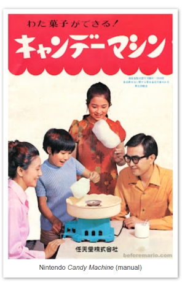
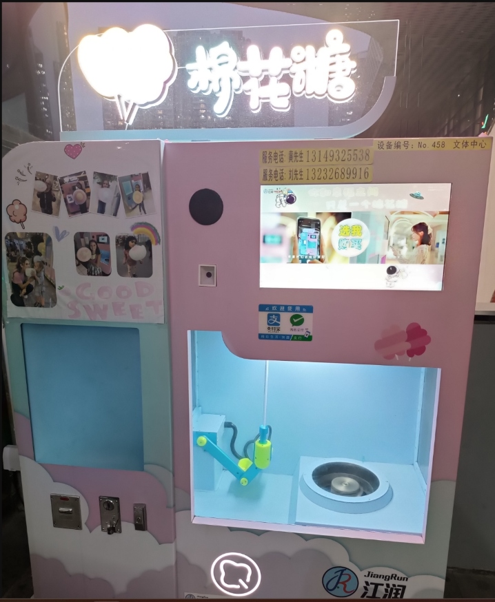

第一部分 · 棉花糖的化学与离心力
第 2 页 / 历史溯源
棉花糖机是怎么来的？
从“仙女丝”到今天的甜品神器，一段甜蜜的发明史
STAGE 01
1904 年
“仙女丝”横空出世
早期机器现场拉丝
🔍 点击放大
美国牙医
威廉·莫里森
与糖果商
约翰·沃顿
发明了世界上第一台电动棉花糖机，命名为
“仙女丝”（Fairy Floss）
。在1904年世博会上一炮而红，创下售出68,655盒的轰动纪录！
STAGE 02
1940 年代
席卷游乐园与马戏团
露天集市棉花糖摊
🔍 点击放大
棉花糖机全面进入游乐园、狂欢节与马戏团，成为
嘉年华标志性的甜蜜象征
。1949年弹簧减震底座的发明，彻底解决了机器剧烈震动的难题，让街头快速现做现卖成为可能。
STAGE 03
1970 年代
飞入寻常百姓家

家庭围桌自制说明书
🔍 点击放大
小型电机与电热丝技术的突破，催生了
家用桌面式棉花糖机
。像任天堂等厂商在1970年推出了儿童与家庭专用机，让普通家庭在餐桌前就能享受自己动手做棉花糖的乐趣。
STAGE 04
今 天
智能化与花样拉丝

智能机械臂自动花样机
🔍 点击放大
棉花糖机进化出了
全自动机器人售卖终端
与精准商用机。机械臂不仅能自动卷糖，还能通过气流精密控制吹出缤纷花朵造型，这台神奇的设备也成了我们小组的
核心探究对象
！
🤔
从百年前的“仙女丝”到今天的智能机器人，这台机器里到底藏着什么科学原理？
进入探究
→
提示信息